EMF ACE
An awards weekend branded end to end, from a desk 2,000km away.
0+
Individual creatives
0
Venues, none visited
0
Day on the ground before opening
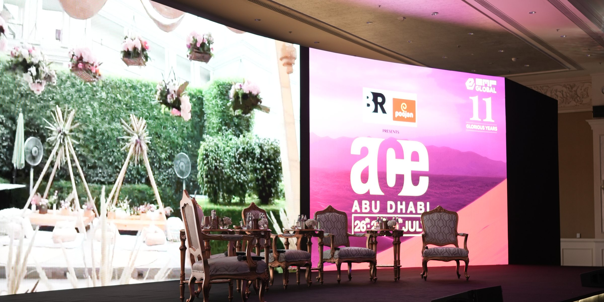
Three months, two designers, one weekend.
Summary
EMF — one of India's largest event bodies — hired us to brand their ACE awards weekend in Abu Dhabi, end to end.
Environmental branding, social, YouTube ads, award designs, attendee packages, welcome letters, the magazine. I led the design out of Media Mushroom as one of two designers on it.
The problem
The hard part was never any one design. It was the volume.
Three months. Two designers. Over a thousand individual creatives. Twelve decision-makers with equal authority, a brief that expanded every week, and every deadline arriving last-minute.
And three venues — the Ritz-Carlton, Emirates Palace and Ferrari World — that nobody on the team had ever stood in.
The work, up front
Volume is the whole argument, so here it is before the explanation. A sample of the thousand-odd pieces — teasers, countdowns, panels, venues, milestones — every one of them made to the same rules.

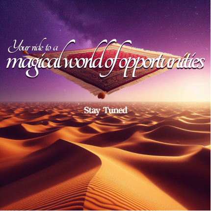
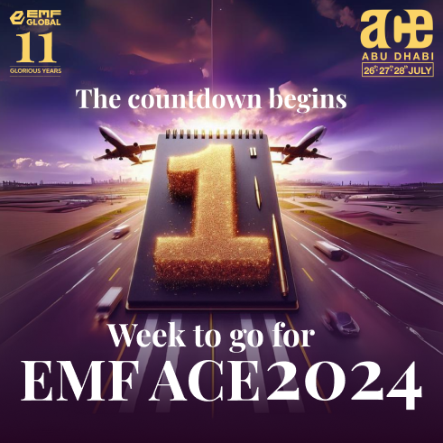
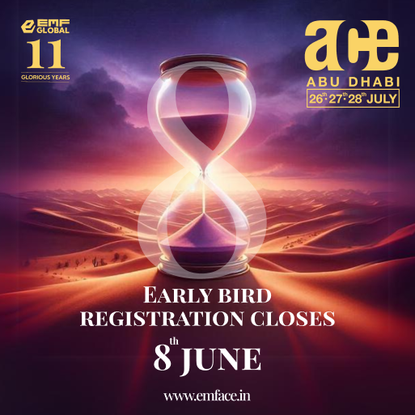

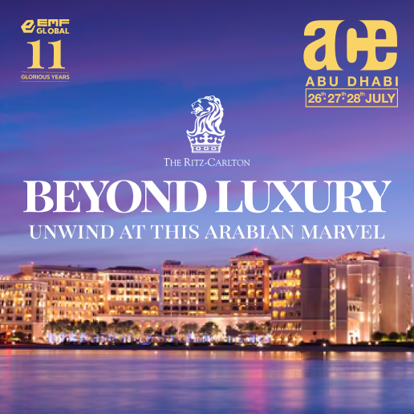

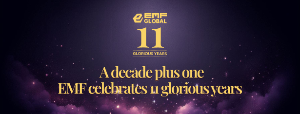
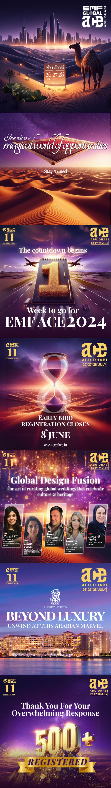
Almost all of it was consumed this way — thumbed past, at speed, between other people's posts. That is the real test of a lockup: it has about a second to say which weekend this belongs to.
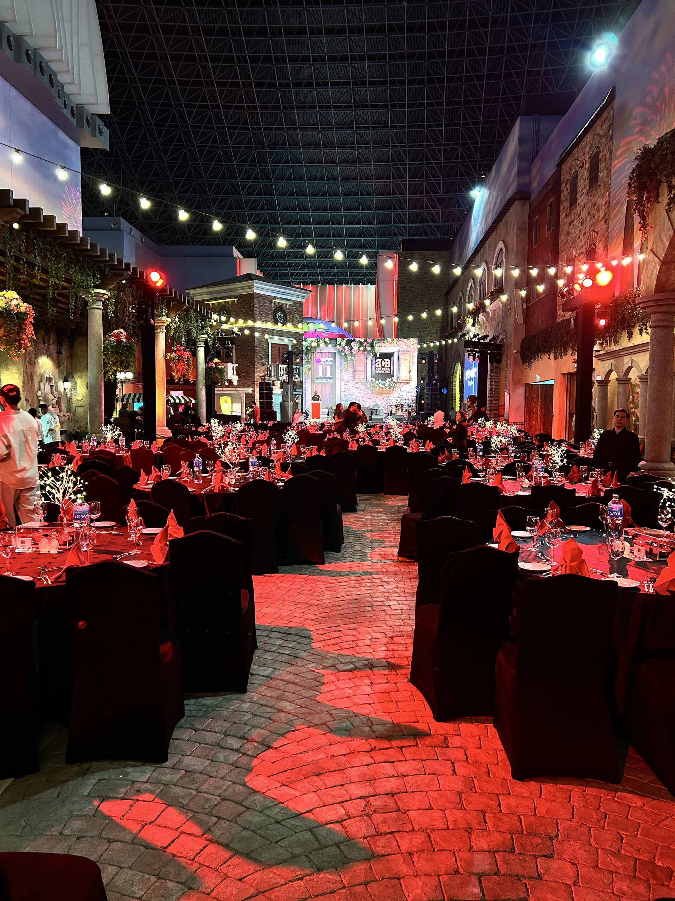
The survival move
Build a system that absorbs the chaos.
With that volume and that many approvers, no individual piece could be defended on its own merits. So the work went into the system instead: a fixed lockup — the ace wordmark, the 11 Glorious Years mark, the dates — that never moved, on anything. One palette and one light: violet, gold, and a desert horizon. Every brief resolved into those.
The test was simple. A piece made in an hour at 11pm had to look like it belonged to the same weekend as one that took two days — without anyone holding its hand.
The lockup, holding
The one that got caught
A system is also what catches your mistakes.
The first desert teaser went out for approval carrying the wrong dates — 20–21 July, against an event running 26, 27 and 28. Twelve approvers had signed it off. It was the lockup rule that caught it: the dates live in a fixed element, so the moment they disagreed with the master they were visibly wrong rather than quietly wrong.
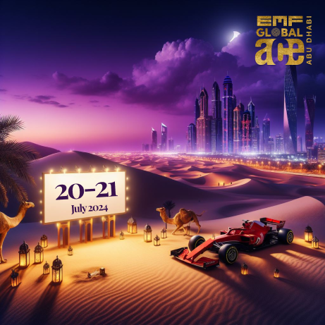
Drag, or use the arrow keys
Sight unseen
Three venues, none of them visited.
The Ritz-Carlton, Emirates Palace and Ferrari World — all designed from measurements, floor plans and photographs, from a desk in India. Stage widths, sightlines, ceiling heights, where a print would be read from twelve metres and where from one.
I had one day on the ground before the weekend opened. Everything either fitted or it didn't.
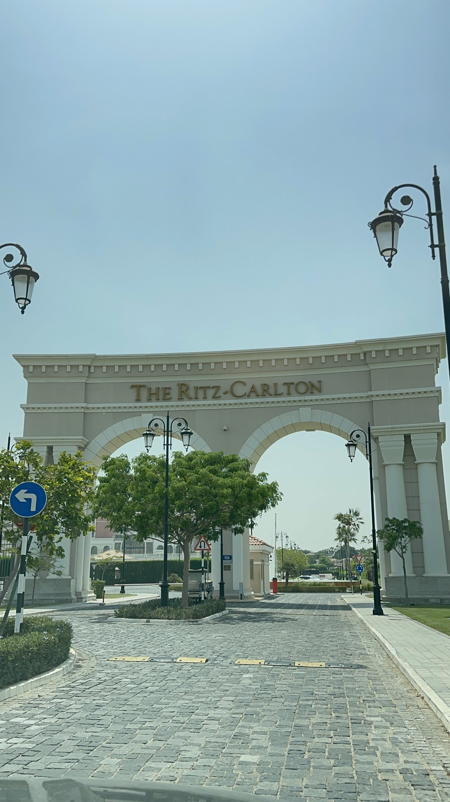
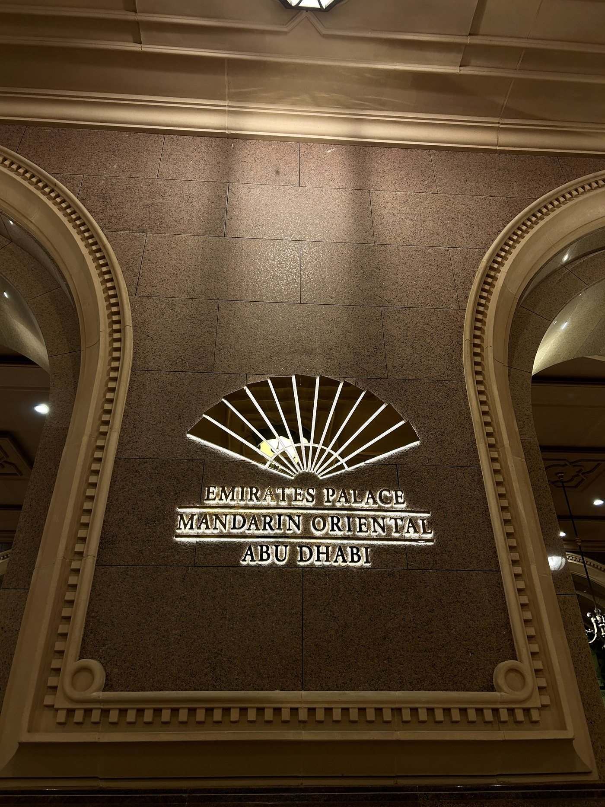
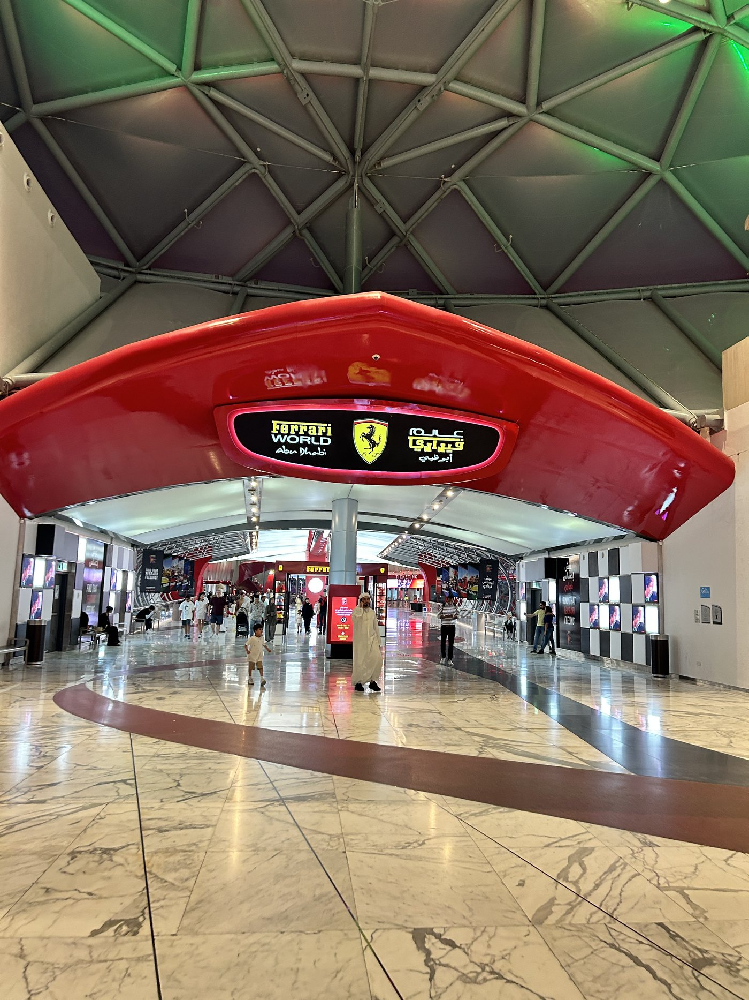
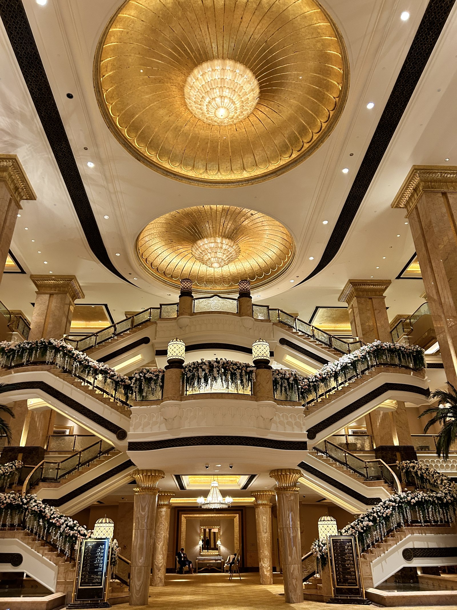
The outcome
It shipped, across three venues, on time.
And I'd structure it differently now. I ran it the way I'd run any project — piece by piece, approval by approval — and the workload compounded faster than the process could carry.
A job that scales this fast, with this many people holding a veto, needs its governance designed on day one alongside the identity. That's the lesson I actually took from it.
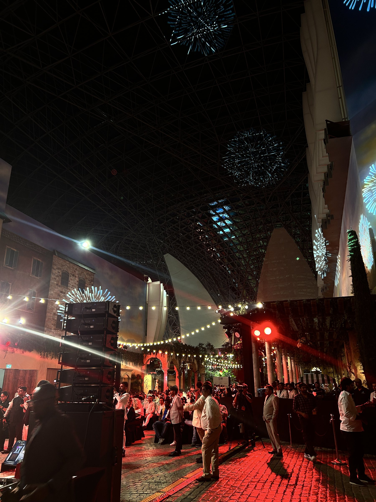
The room, on the night.
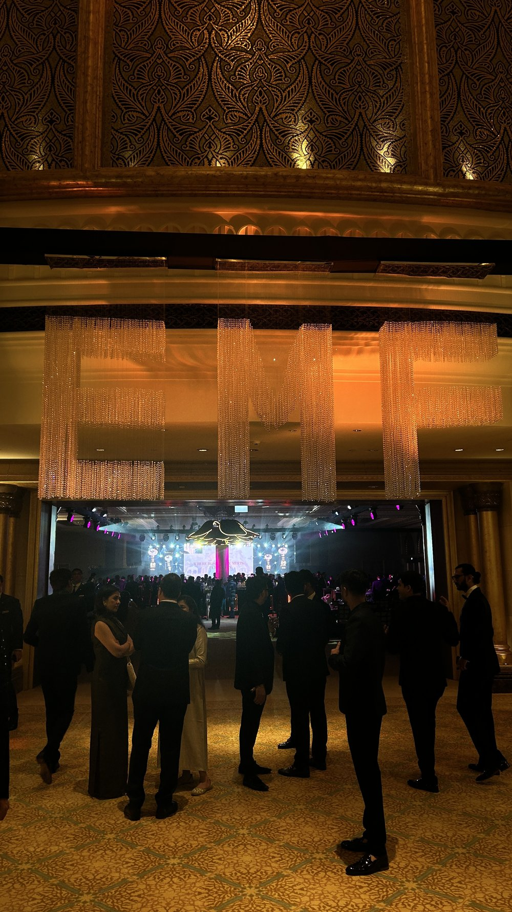